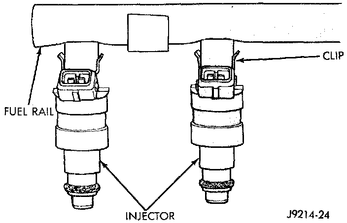
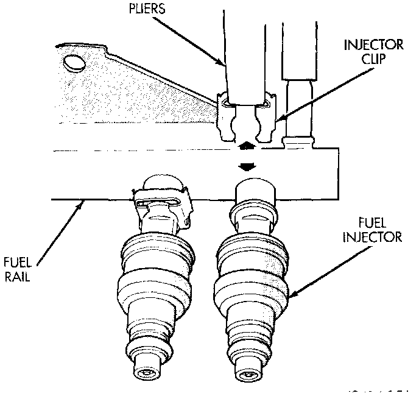

Fuel Injector: Service and Repair
FUEL INJECTOR(S)WARNING: The fuel system is under a constant pressure even with the engine turned off. Before servicing the fuel injector(s), the fuel system pressure must be released.
Release fuel pressure.
To remove one or more fuel injectors, the fuel rail assembly must be removed from engine.
REMOVAL
1. Remove air duct at throttle body.
2. Remove fuel injector rail assembly.
Fig. 33 Fuel Injector Mounting - Typical:

Fig. 34 Fuel Injector Retaining Clips - Typical:

3. Remove the clip(s) retaining the injector(s) to fuel rail (Fig. 33) or (Fig. 34).
4. Remove injector(s) from fuel rail.
INSTALLATION
1. Apply a small amount of engine oil to each fuel injector 0-ring. This will help in fuel rail installation.
2. Install injector(s) and injector clip(s) to fuel rail.
3. Install fuel rail assembly.
4. Install air duct at throttle body.
5. Start engine and check for leaks.